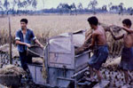
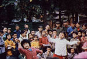
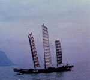
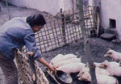
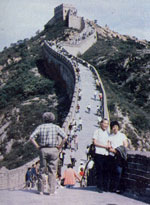

The China Experience
January/February 1981
MOTHER's globe-trotting travelers are back, with a report on . . .
There's no question that fortune smiled on MOTHER's recent tour to the People's Republic of China. We were able to visit such locations as Kunming, Chengdu, and Nanning, as yet "unwesternized" by the influences of tourism and only recently opened to visitors . . . and that made us feel especially privileged when we talked, later, to other travelers stuck in such already beaten paths as the Beijing/Guilin/Shanghai/Guangzhou route.
TOURIST "MUSTS"
Of course, we did make certain-during our short stay in Beijing-that we climbed the Great Wall (it's steep!), explored the gorgeous symmetry of the Forbidden City, visited the Ming Tombs, and took a leisurely tour of the stunningly beautiful Summer Palace.
We even had opportunities to join the capital city's citizens (at least those of us who got up early enough did!) in their morning exercises . . . to observe with awe the thousands of rushhour bicyclists pedaling safely in wide, clearly marked lanes . . . and to visit the famous Red Star Commune, where (among other things) we cheered a cow on as she gave birth to a healthy calf, and looked on unhappily while Peking ducks were forcefed to make fat future dinners.
THE "REAL" CHINA
But when we headed for more distant provinces, we came face to face with an even more interesting China. The experience began on the evening that we walked out of our Chengdu hotel and found a number of people waiting for us . . . to "practice their English".
It's remarkable how fluently such men and women can converse after only two or three years of lessons. That first night, for example, we were accosted by two attractive high school girls who were extraordinarily concerned about the outcome of the American presidential election, and disappointed that we couldn't predict the outcome.
Surprisingly, we found that no subjects-even military matters-were taboo to the often well-informed people we encountered, and answers to our questions were obviously candid. At first, when they said, "Let's walk while we talk," we thought we were encountering signs of some form of national paranoia, but it soon became evident that stopping on the streets (or anywhere else) would immediately attract scores of unabashedly curious onlookers.
ANOTHER KIND OF COMMUNISM
In great contrast to the citizens of the U.S.S.R.-who always seem to feel the power of some sort of intangible authoritarian "vibes"-the Chinese don't appear to weigh their words or feel the slightest nervousness when dealing with Westerners. This, of course, was not true a few years ago. We heard unpleasant accounts of the days of the Cultural Revolution, though some of the people we met felt that their time served on communes (it's no longer mandatory, but was required not long ago) had been a good thing.
On the whole, however, the people claimed to be immensely happy with the country's new regime ... which is, seemingly, decentralizing power and making knowledge and efficiency-rather than merely "good Communism"-prerequisites for high positions in a land eager to upgrade the standard of living of its populace.
There were still complaints, though . . . most of them from young people, who have a strong desire for more "personal freedom". At present, youths must work where they're told, and have a great deal of trouble ever changing their professions. (In order to keep the nation's cities from becoming more crowded, the government often forces people to take jobs in the areas where their parents were born.)
Many of the Chinese, however, seem quite resigned to fulfilling their slots in life in such a way. One university student did complain that the teaching job she would be assigned to would be "boring" . . . but when we asked whether that fact made her angry, she only smiled and said, "No, not really."
Others were more discontented. Our young high school acquaintances, for instance, were furious because "international dancing" (as they call disco/rock) had been banned everywhere except in the schools. They also commented, with some disgust, "The high officials have big houses . . . but the people have little ones."
THE BASICS
Chinese housing, in fact, often leaves much to be desired . . . yet rents average only 70 cents a month out of an almost universal salary of $48 a month, and some of the innovations in the small homes (such as carefully designed one-family methane plants that provide free lighting and fuel) are little short of amazing. (Look for a how-to article detailing these "family-size digesters" in a forthcoming issue of MOTHER.)
The average citizen's clothing, on the other hand, seems to be perfectly adequate, and the nation's stores (again, in comparison with those in the U.S.S.R.) are filled with goods at reasonable prices . . . there's even a choice of brands! Furthermore, health care is free, and people can choose either traditional or Western medicine . . . or a combination of both.
Food, as we had heard prior to our trip, is abundant. Intensive, raised-bed gardening is evident everywhere (this, too, will be described in detail in a future is sue), and each spare inch of topsoil is put to agricultural use . . . from highway right-of-ways to meter-wide ledges dug out of steep mountainsides. The results were reflected in well-fed, healthy-looking people . . . in booming "free markets", where growers could sell their surplus produce . . . in crowded restaurants . . . and in our own meals, which usually ranged from 10 to 20 delicious courses. (We did occasionally have to deal with such "delicacies" as roasted sparrows with their heads still intact and fried baby bees. However, the latter turned out to be quite tasty . . . in fact, most of us couldn't "eat just one"!)
AFTERTHOUGHTS
But the best thing about our trip to China-in addition to the excellent food, the efficient service, the ancient temples, the picture-book parks, and all the other enchanting historical landmarks that made this country so wonderful to visit-was the opportunity to interact with its gentle, cheerful, caring people and their well-loved, fearless children. Many of our travelers remarked that despite-or maybe because of-the lack of police or guards, they had never felt safer or more comfortable anywhere . . . and several are already planning to return the next time MOTHER sponsors a China trip.
That "next time" may be next summer. . . but perhaps won't take place until 1982. We're spoiled now, you see, by the knowledge of a China that exists far away from the "tourist track", so we're still holding out for permission to visit more distant places (maybe even Tibet!). If you'd like to make such a journey, let us know (write the address given below) . . . and we'll contact you as soon as we're granted visas.
IN THE MEANTIME
Until then, MOTHER has some other incredibly fine tours to satisfy your wanderlust and your desire for practical knowledge of the world: a Solar Tour of Israel (February 19 to March 3, 1981) . . . a Scandinavian Crafts Tour (May 5 to May 22, 1981) . . . a previously unannounced Sanctuaries of Sri Lanka Tour (July 4 to 24, 1981) to study exotic animals and birds under the guidance of that country's Wildlife and Nature Protection Society . . . a Solar Tour to England and France (August 23 to September 6, 1981) . . . and a South Seas Seminar-with Paul and Anne Ehrlich, and John and Cheri Holdren-that will take us to Tahiti, Bora Bora, and Raiatea (November 27 to December 11, 1981).
And we're already lining up other exotic learning experiences for 1982. Write to Mother's Tours (P.O. Box 70, Hendersonville, North Carolina 28791) for more information, or to put your name on our tour mailing list.
 Since the demise of the Cultural Revolution, Buddhist temples and monasteries have reopened. |
 China's huge rice crop is threshed mostly by foot power |
 Schoolchildren on a field day entertain each other?and passers-by?with songs and dances |
|
 A misty day, on Yunnan's Tien Chih Lake |
 Free market pigs produce extra income |
 The Great Wall is a top tourist attraction. |